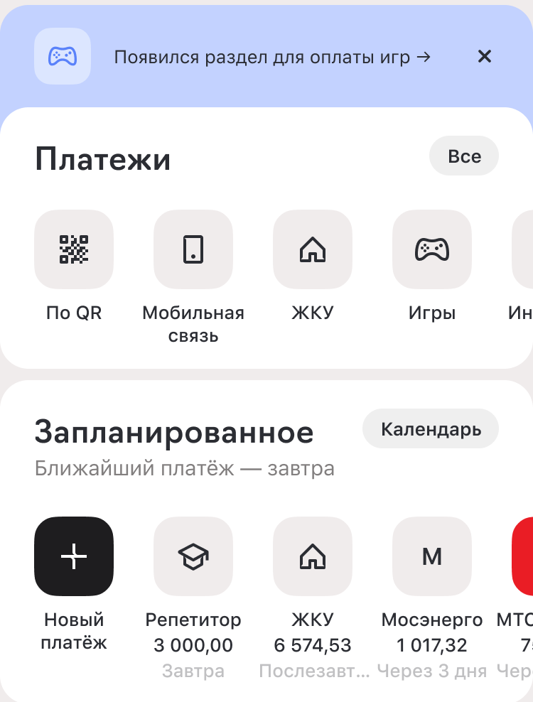

FRAME 007
Планирование платежей

Overview
Goals
The Problem
- возможность заранее увидеть финансовые обязательства;
- меньше риска забыть о запланированном платеже;
- возможность хранить собственные будущие расходы вместе с банковскими платежами.
- больше сценариев внутри раздела «Платежи»;
- дополнительные поводы возвращаться в приложение;
- потенциальный рост своевременных оплат
Overview
- увидеть ближайшие платежи;
- перейти к календарю и проверить конкретную дату или месяц;
- открыть существующий платёж и перейти к его оплате;
- добавить собственный будущий платёж;
- настроить дату, периодичность и напоминание;
- вернуться к списку платежей, отредактировать его или оплатить
Overview
Goals



Overview
- понимают ли пользователи назначение блока «Запланированные»;
- находят ли календарь без подсказки;
- понимают ли, как добавить собственный платёж;
- не теряются ли при настройке периодичности и напоминаний.
- количество добавленных пользователями запланированных платежей;
- долю пользователей, которые взаимодействуют с календарём;
- количество переходов из запланированных платежей к оплате;
- долю своевременно выполненных запланированных платежей